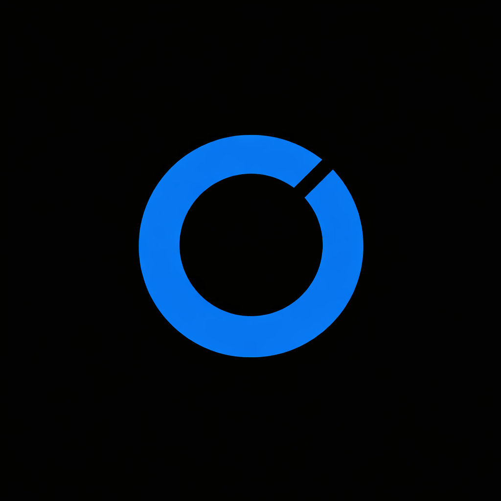

The weather map lived on a server that no longer exists, so it has been showing nothing but a loading spinner. Rather than repair a page that was decoration, we retired it.
Everything it showed, and more, is on the dashboard: all 50 cities, the full probability distribution for every bracket, the executable price, and every signal scored including the markets we skip, with the reason.